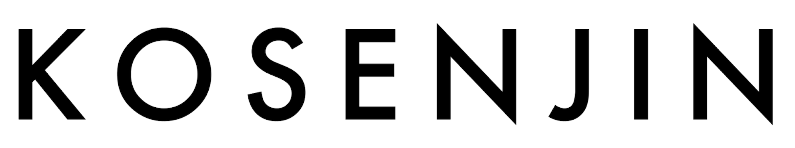

ロゴマーク公募内容
高専制度創設60周年の節目を機に、すべての高専人の互助ネットワークを有形化し、継続性のある互助活動を行うことを目的として「一般財団法人高専人会」を創設いたしました。高専の価値をより一層高め、社会に貢献する活動の場を広げるために「一般財団法人高専人会」のロゴマークを募集いたします。
◎募集内容
「一般財団法人高専人会」のロゴマーク
◎主催者
一般財団法人高専人会
◎締切日
2022年7月31日（日）
◎応募資格
高専在学生、高専に在学履歴のある方、その他高専関係者
◎賞金
採用が決まった場合5万円
◎応募方法
・ロゴマーク仕様：
オリジナルのシンボルマークとアルファベット「KOSENJIN」を配置してください。
※色数の制限はありませんが、拡大・縮小する場合や、モノクロで使用する場合にイメージが損なわれないデザインであること。
・提出方法：
JPEG、PNG、PDFのいずれかの形式で、3MB以下のデータをメール添付にて提出してください。
※採用の場合は編集可能なIllustrator形式でデータをご提出いただきます。
・提出先：
一般財団法人高専人会 ロゴマーク公募窓口
info@mail.kosenjin.org
◎留意事項
作品は応募者の自作かつ未発表のものとし、既存デザインを模倣してないものに限ります。万が一、著作権その他権利侵害などの責任が問われた場合は、すべて応募者の責任において対応させていただきます。
採用された作品の著作権、商標権、意匠権、その他使用権等一切の権利は、一般財団法人高専人会に帰属いたします。
応募時の個人情報は、募集業務以外の目的には使用いたしません。なお、採用作品につきましては学校名、氏名（団体名）を選考結果として発表させていただきます。